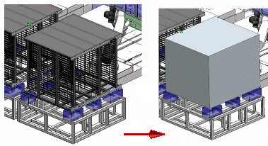
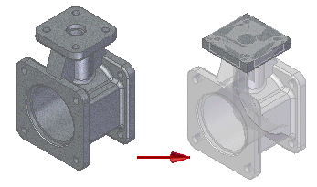
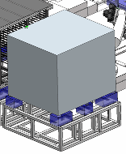
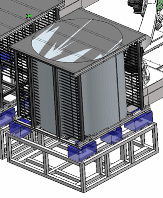
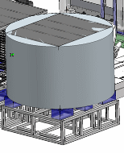
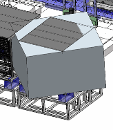

Enclosure command
In the Assembly environment, creates a simplified representation of an assembly enclosing the selected assembly components within a solid body. Use the Enclosure command with the Model command.

To learn how to create an enclosure in an assembly, see Create a simplified version of an assembly.
You can in-place activate an enclosure feature to change such things as the enclosure type. While in the in-place editing mode you can select assembly components and assembly faces.
In the Part and Sheet Metal environments, creates a simplified representation around the selected geometry within a solid body and adds a new body to the model.

For more information, see Create an enclosure around part geometry.
Enclosure types
Enclosures are ordered solid geometry that reside within an assembly or part. After you select the assembly components you want to simplify, or the part or sheet metal geometry you want to enclose, a face or plane is used to orient the enclosure. The face or plane must reside within the local assembly or part.
Enclosure Types:
-
Box

-
Inside Cylinder

-
Outside Cylinder

Shown below is a box enclosure oriented by a plane which is not perpendicular to the faces of the components being enclosed.

How do I
Edit an Auto-Simplify definitionCreate a single body using Auto-Simplify
Use the simplified version of a part in an assembly
Use the designed version of a part in an assembly
Create a simplified version of an assembly
Save a simplified assembly as a part
Controlling simplified assemblies
Learn more
Simplifying partsSimplifying assemblies
Simplified assemblies best practices
Look up more details
Auto-Simplify commandAuto-Simplify command bar
Create Simplified Assembly using the Visible Faces command
Create Simplified Assembly using the Model command
Duplicate Body command
Simplify Assembly command
Save Simplified As command
Use Simplified Parts command
Use Simplified Assemblies command
Simplify Model command
Update Simplified Assembly command
Save Simplified Assembly As dialog box
Simplified Assembly Visible Faces Options dialog box
Design Assembly command
Use Designed Assembly command
Use Designed Part command
Design Model command
Create Simplified Assembly Visible Faces command bar
Create Simplified Assembly Model command bar